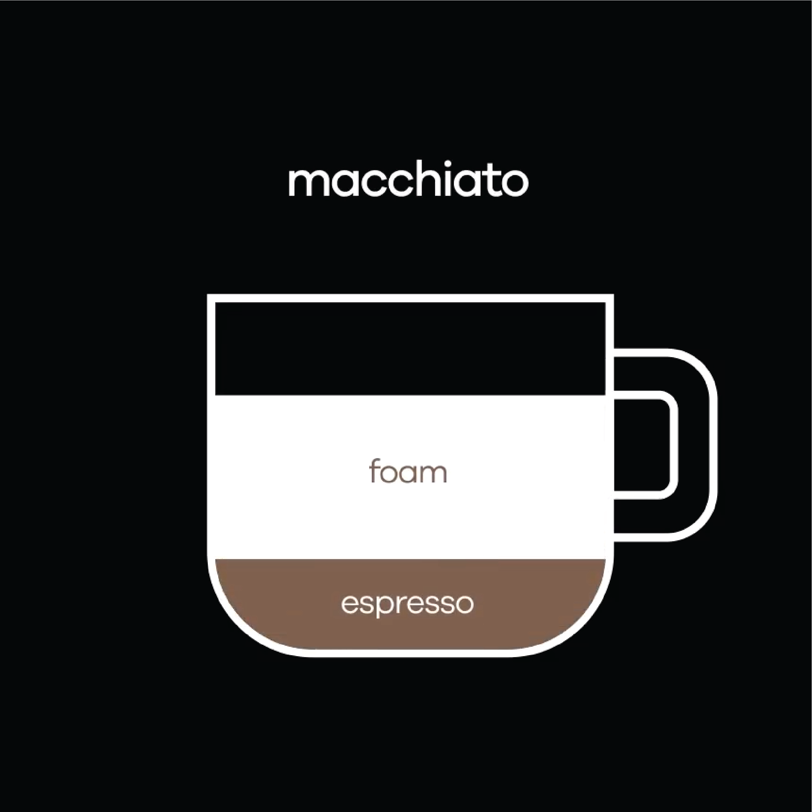

The espresso macchiato, simply called a caffé macchiato in Italy, is the original form of this drink. In this case, the milk stains the espresso.The point of this drink is to have an espresso slightly moderated or subdued by a splash of milk. Compared to other espresso-based drinks, the macchiato tips the espresso to milk scale the furthest towards espresso.
